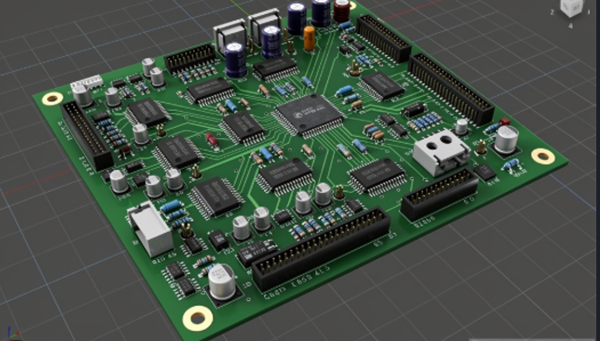

158 entries, not 158 confirmed components. Select an ID to locate its approximate position. Uncertain parts remain uncertain; tiny band/end details do not count as extra BOM parts.

The corresponding source location, interpretation and confidence will appear here.
Complete implementation plan · Machine-readable inventory